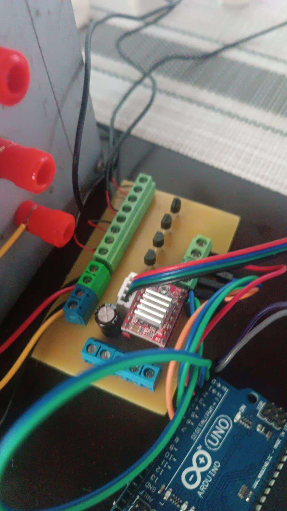

Asesoría en Electrónica
Proyectos de Electrónica
Realizacion de proyectos de electronica, placas PCB con CNC para un mejor acabado en las placas sin pistas quebradas, mayor confiabilidad y durabilidad de los proyectos, con un acabado profesional.
Ver detalle